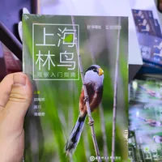
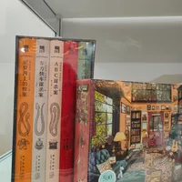

我感觉自己很难再有买书的欲望
当我在书展里翻开一本有趣的书时，我总会在想自己为什么不选择去图书馆借阅，还会想到家里从未拆封的新书，想到没有空间的书架，想到以后搬家的麻烦……于是我又总是放下了这些书。
或许买书需要一种冲动，也许来自于书籍精美设计的吸引，又或者来自于对书籍本身的占有欲，只可惜我都缺失，我对书籍的欲望仅存在于阅读，而现代文明的图书馆体系与微信读书恰恰好完美地填充了我这一欲望。
意识到自己其实并不会选择买书后，我丧失了身在此处的意义。在图书馆我可以慢慢地挖掘到有趣的书籍，从中选出三四本借走。而在这里我只能随着拥挤的人流游荡，带着疲惫，烦躁与气馁，仓皇而逃。

